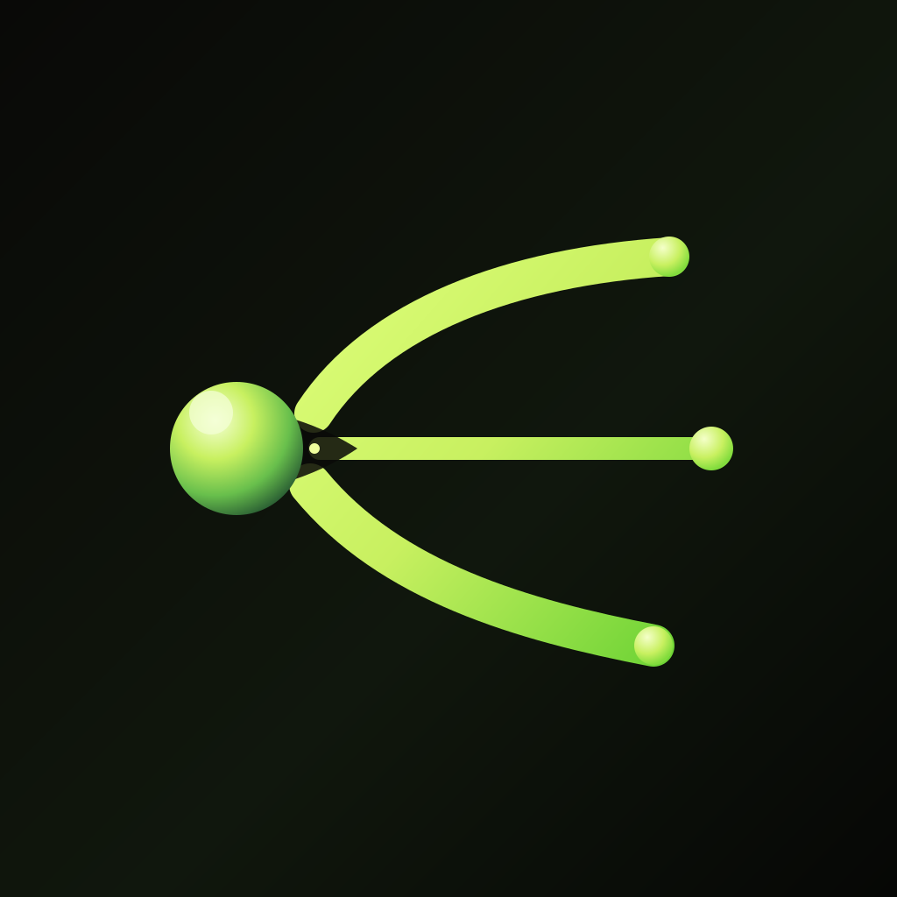
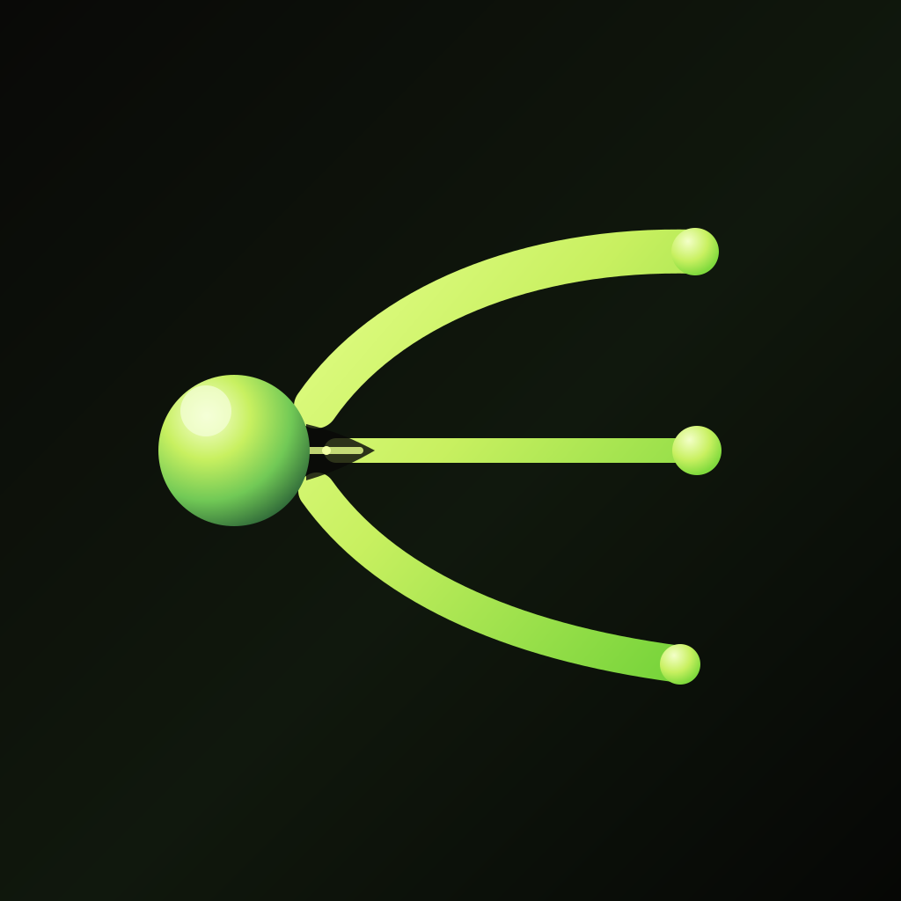
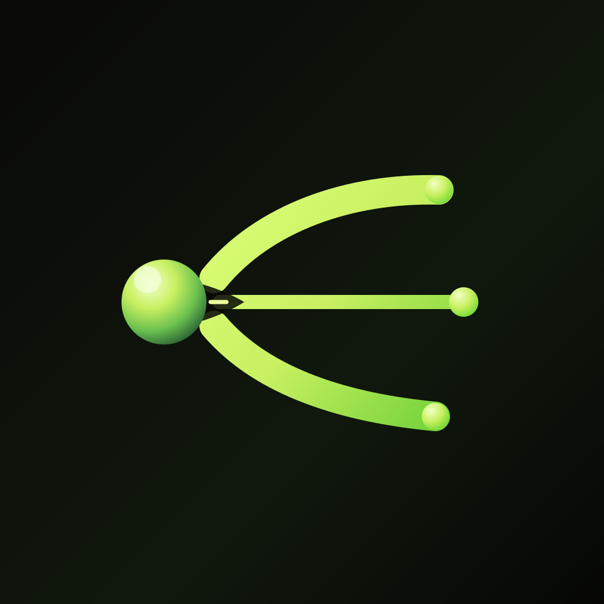

A. Precision Signal
Tighter, cleaner, more premium. Best balance of recognizable shape and modern SaaS polish.
Three vector refinements of the original symbol. All keep the creator node, broadcast arcs, directional marketplace connection, rounded terminals, and neon-green gradient lighting without raster effects.

Tighter, cleaner, more premium. Best balance of recognizable shape and modern SaaS polish.

Larger creator node and stronger directional movement. More expressive, slightly less restrained.

Most app-icon friendly. Shorter arcs and tighter composition for small-size recognition.